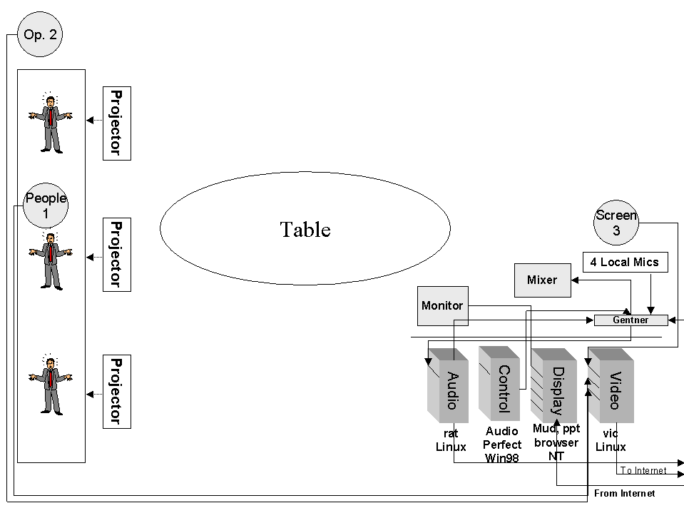

There are several
steps to building a node:
1. Download Audio Algorithm
2. Download Video Algorithm
3. Get at least a T1 for bandwidth- call local telephone company.
4. Set up the equipment according to this configuration
5. Have a microphone, camera, computer, video card, audio card, 10 Mbps.
How can I find out more information about the Access Grid?
Visit http://www.accessgrid.org/.
Official Access Grid documentation is at http://www.accessgrid.org/agdp/
Managing an Access Grid Node
This tutorial is dedicated to the true techies. Access Grid node operators will find HPC@UNM procedures and policies.
Readers can use this information to:
Checklist for Activating the Access Grid
1. Power on:
- Display monitor
- The audio, control, display, video PC's
- Video projectors by using their remote control- NEVER TOUCH THE PROJECTORS! Use the white power buttons on the remote control.
- Sound Mixer (Make sure sliders are all down before powering up. Power is in back. Normally will not use phantom power.)
- Equalizer
- Gentner should ALWAYS be on.
- Speakers are autopowered- you do not have to deal with them.
2. The display monitor will be blue. The screen actually includes the entire front screen.
3. Sign in as username, password.
4. On Display (3) click on start-eventlistener icon on desktop
5. On Display (3) click on drm icon on desktop
VIDEO
6. Switch over to video (4) by using the select button on the black display switcher.
7. Log into RedHat
- Login: username
- Password: password
8. Click on whichever window is activated. You can tell which is activated because it is blue.
- cd /usr/local/ag/bin
- vrm-eventlistener
CONTROL
9. Switch over to control (2) Win98 by using the select button on the black display switcher.
10. Start "Audio Perfect"
11. Select AHPCC-Online
AUDIO
12. Switch over to audio (1) by using the select button on the black display switcher.
- Login: username
- Password: password
13. Select the window
- cd /usr/local/ag/bin
- arm-eventlistener
JOIN THE MEETING - check AG Schedule to see which room you are in. (WARNING - a manual boot-up is necessary when Netscape will not connect. Substitute 14-26 with #37.)
14. Switch over to display (3) by using the select button on the black display switcher.
15. Open Netscape
16. Goto URL: http://venues.accessgrid.org/AG/
17. Possibly you may have to log in.
- Login: username
- Password: password
18. Enter the AG
19. Move windows out of the way. BE DISCRETE if you have an audience.
20. Stretch thumbnail window to include everyone in the room.
21. Put mouse in the thumbnail window, hit 8. You are now in the lobby.
22. You can change window sizes by:
- s - small size
- m - medium (normal) size
- l - large size
- d - dismiss window (to close the window -- never click the x) can also close window by clicking on thumbnail.
23. Slide windows over until you get to the desktop.
24. Start Simple MU
- Connections,
- Connect to,
- Your own account- Login: username Password: XXXXXXX
25. Go to access - you are now in the "MUD" or backchannel.
Additional Functions
27. To make a comment, use a double quote. Ex. "Which room will the nanocruise be in?"
- Go to the correct room by
opening a new Netscape window in the lobby.
- the lobby has hyperlinks to all the rooms.
- The thumbnail window will
close and restart
Hitting 4 refreshes the thumbnail window.
28. To Hear:
- Slide Gentner to 10 on mixer
- Slide Main to 10 on mixer
- Make sure the Line-In is selected on RAT.
29. To open our microphones:
- Select audio (1) on black display switcher
- Hit "talk" button in listings window
- Go back to display (3) on black display switcher
30. To adjust volume:
There are two ways to adjust the volume:
- Select audio(1) on black display
switcher
- Left mouse button on desired site and adjust volume on popup window. The "Participant UNMAG" window appears. You want roughly 75% open on the slide bar. Ex. If KU is suspected to be too loud, left mouse on their name, then adjust.
- Use the Sliders on the mixer.
31. To switch audio to Telco
- Switch to Control (video 2)
- Double click New AP400
- Click Preset 2
- Click Telco
- Pick up phone and dial the requested numbers
- Dial 9 for toll free numbers
- Otherwise, get dialing access code from HPC@UNM authority
- Click the "On" button on the control screen
- Once the "On" is running, hang up the phone.
32. To adjust Telco volumes:
- "From Telco Receive" on control (video 2)
- Boost or lower gains
33. To adjust your microphones when in Telco:
- To Teleco Receive on control (video 2)
- Boost or lower gain
34. To hang up Telco:
- Click "Off" button on the Control (video 2)
- Switch to Preset 3
35. To display PowerPoint:
There are two ways to display PowerPoint:
1. Locate PowerPoint off the web by using mud or Access Grid scheduler.
2. Download PowerPoint presentation before the presentation.
36. Distributed PowerPoint instructions:
- Find out which machine will be the remote SERVER (ask the MUD)
- Download and save the .bat and PowerPoint show to I:\dppt3\
- Edit i:\dppt3\config.bat so that SERVER line has SERVER machine name.
- click on registry icon on desktop
- click on agserv icon on desktop
- make sure that master is running on remote site if speaker isn't local and if speaker is local that NO master is still running at any other site before proceeding to next step.
- open a command window and
type:
- if speaker is remote:
i:
cd dppt3
client <full path to ppt>\file.ppt - -if speaker is local:
i:
cd dppt3
master <full path to ppt>\file.ppt - (for example, if ppt is called show.ppt in i:\powerpoint for local speaker master i:\powerpoint\show.ppt)
- if speaker is remote:
37. Manual Bootup
-If you can not log onto Netscape, use the manual bootup
- On Display (switch to 3) click "dis" (Display Resource Menu) on start menu.
- Enter the room IP address. (See Green Tab Section in Red Book)
- Hit "Start Capture"
- Switch to Video (switch to 4)
- Enter the room's video IP address in all three boxes
- Then hit "Start Capture" on the three boxes.
- Switch to Audio (switch to 1)
- Enter the room's audio IP address
- Hit Start Audio Capture
-Manual MUD Bootup:
- Switch to Audio (switch to 1)
- Open a new shell window
- Type in: telnet wfg.mcs.anl.gov 7779
- Type in: connect <username> <password>
- Use standard mud commands to communicate.
38. To shut down:
- Close video windows by hitting "dismiss." The X button may hang up vic.
- Exit Netscape
- Hit Stop Event or Stop capture for Audio, Display, and Video
- Logout
- Close control (2) by selecting 2 on black display panel
- Close all open windows on all four pc's
- Double click projector's power off button.
- Slide off mixer's sound ports.
- Shut off mixer and equalizer
- LEAVE GENTNER ON.
Room Diagram

AG Session Procedures
The following procedures for conducting an Access Grid (AG) session at the HPC@UNM will be followed for all sessions. The procedures consist of this description, the Agenda/Script, and the Session Worksheet. Responsibility for HPC@UNM AG Services is with Manager, HPC Systems Group who will delegate authority and responsibility as required. Sessions will be conducted in as professional manner as possible. .
Roles. The Access Grid is a service provided to the HPC@UNM and other entities at UNM. The service will be operated and maintained by a group designated from the HPC Systems Group. Special troubleshooting support, additional or improved capabilities will be provided from the HPC Systems Group.
|
AG Services Coordinator: |
Individual responsible for managing the AG Services; reports to the HPC Systems Manager; develops and implements procedures; supervises node operators |
|
Node Operator: |
Individual responsible for equipment setup and preparation, conducting technical portion of session, coordinating with other operators on the Grid |
|
AG Technical Support: |
Science, engineering and technical support staff providing specialized technical support to the AG Services Manager |
|
Session Host: |
Individual responsible for conducting the session program |
|
Presenters: |
Individuals presenting on the Grid from HPC@UNM site. |
|
Participants: |
Individuals present at session from HPC@UNM site. |
Procedures. The following procedures will be used whenever a session is scheduled. Certain steps may be omitted when a practice or research session is on line.
Step 1: Scheduling the Access Grid
- AG user makes request to AG Services Coordinator by completing the "AG Request Form"
- AG Services Coordinator verifies the Session Host has checked the availability of:
- If both are available, makes reservation on both AG & HPC@UNM room scheduler.
- Schedules an AG technician for the HPC@UNM.
Step 2: Pre-meeting Setups
- AG Services Coordinator orders node operator to prepare for the meeting
- The node operator will use the request form to locate and install any possible media. Media include:
- PowerPoint slides
- Emailed communications
- Web sites
- In-meeting handouts
- The node operator will print out and distribute the meeting’s agenda.
- The node operator will also set up the equipment according to the "Equipment Checklist" & demands of "AG Request Form." Equipment must be up and running at a minimum of 30 minutes before the meeting. This is a buffer zone to correct network problems.
- If request form desires a rehearsal, the AG Services Coordinator will schedule a node operator accordingly.
Step 3: Conduct meeting
- Node operator will follow meeting’s agenda to cue media, microphones, and camera
- Node operator will complete the "AG Log Book." This helps diagnose troubleshooting.
- Upon completion of the meeting, the node operator will attach the agenda to the log book
Access Grid Log Book
Session Date: ______________
Node Operator: ____________
Session Host: ______________
Start up time: ______________
Shut down time: ____________
Purpose of Session:
Node operators will:
- use the request form to locate and install any possible media. Media include:
- PowerPoint slides
- Emailed communications
- Web sites
- In-meeting handouts
- print out and distribute the meeting’s agenda.
- set up the equipment according to the "Equipment Checklist" & demands of "AG Request Form." Equipment must be up and running at a minimum of 30 minutes before the meeting. This is a necessary buffer zone to correct network problems.
List any technical issues and their solutions:
*Please attach agenda to back of this page.
Access Grid Glossary
Abilene
Abilene is a research project on high-bandwidth networks. It is a version
of the next Internet. It will eventually support OC-48 connections.
Access Grid
The Access Grid is a software application running over a high bandwidth
network. The application includes a video interface control (VIC) and a
robust audio tool (RAT).
Access Grid Control Station (AGCS)
The AGCS is the base of operations. Its technologies run the Access Grid.
Every Access Grid node is custom designed according to budgets and equipment
availability. The following description should be considered generic overviews.
Four PC's exist to isolate technical glitches. When trouble arises, the operator may focus on the trouble PC. Other communication channels continue despite the loss of one PC. Nodes that put all technologies onto one PC run a dangerous risk of total collapse. If one thing goes wrong, then everything crashes at their site. They can not hear or see the remote sites.
They are set up in alphabetical
order from left to right:
(1) Audio: This system controls the "rat" or the audio.
(2) Control: This system controls the Gentner echo cancellation.
(3) Display: This system controls the onscreen displays and "mud."
(4) Video: This system controls the "vic" or the video.
Audio Equalizer
The audio equalizer is also a device that only the HPC@UNM uses. It makes
people sound more realistic rather than like a telephone call.
Audio Mixer
The audio mixer should not really exist. The mixing functions can be controlled
by the rat. The HPC@UNM uses it because the rat is not fully trustworthy.
Cameras
People 1 is the main room camera. It takes pictures of the local participants.
Operator 2 is a backchannel camera. It takes pictures of the Access Grid
operator.
Speaker 3 takes pictures of lecturers that choose to stand beside the screen.
The Access Grid operator is expected to run the cameras. Generally, all shots remain static. Speakers and participants do not normally move about the room. All cameras are controlled by the same Sony remote control. You can flip between each camera control by pressing the white buttons.
Control
The Gentner needs to be computer controlled. The HPC@UNM's control computer
is #2 going left from right.
Decibels
Decibels (dB) are the measurement unit of sound. At 0 dB the human ear can
not detect any input. The Access Grid nodes all have their own decibel settings.
You can set your site's levels during the "nanocruise."
Display Monitor
The display monitor is for the operator's use only. It is the first of four
display screens. The other three projectors continue the display. A window
may be moved from the display monitor over to the projectors by dragging
the mouse. The display monitor is hidden from the participants. It is usually
loaded with technical sites.
Distributed PowerPoint
Distributed PowerPoint is open-source software. It remotely controls the
far-end's PowerPoint. A d-channel is dedicated to controlling the software.
Gentner Echo Cancellation
The Gentner controls the echo cancellation. It works in conjunction with
the control PC to stop feedback. Everyone on the Access Grid is required
to use a Gentner.
Internet
The Internet is a network of computers. It started as a military function,
became a research project, then was sold to industry.
Internet2
The Internet2 is a research project. It supported a very broadband network.
It is often confused with other research projects like VBNS, Abilene, and
Next Generation Internet.
Mixer
Mixers are control devices that blend various sound sources. The rat and
the audio both have their own mixers. The HPC@UNM prefers to set its audio
mixer at 10 decibels.
Multicasting
Multicasting is when multiple sites simultaneously distribute and receive
data to each other. A site sends a single stream to its router. The router
distributes it to multiple sites simultaneously. Multicasting is the foundational
concept of the Access Grid.
Nanocruise
Small test of the Access Grid.
People
The local participants sit at the table and around the room.
The far end participants are projected onto the screen.
The local Access Grid operator sits at the controls.
Projectors
The projectors are numbered from South to North. They do not require much
attention. Please do make sure to shut them off after the program.
RAT
The robust audio tool (RAT) is the Access Grid's audio control device. It
is a software application that supports multicasting. It allows for many
developers are working to develop the RAT.
T1
A T1 is a data connection. It comes in two flavors: 1)24 56-64K channels
or 2)23 56-64K channels plus one d channel. It has 1.54 megabytes per second.
Remote Control
There are two handheld, remote controls. One is for the projectors' power.
The second is for the cameras.
VBNS - Very Broadband Network Systems
The VBNS was a research project sponsored by Sprint. Its purpose was to
support a large bandwidth network. Approximately 36 sites served a total
of 140 universities while on VBNS.
VIC
The video interface control (VIC) is a video control application that multicasts.
It can handle multiple streams of incoming video while simultaneously streaming
out.
Troubleshooting
Troubleshooting as a Process
Troubleshooting is a process. It is a systematic analysis of facts. It uses empirical facts rather than "gut" feelings. Use the following troubleshooting guide as a process of diagnosing rather than as solving symptoms. This brief description hopes to get Access Grid operators thinking in terms of a system rather than a symptom. The scientific method is a systematic process of examining facts, deriving empirical realities, and solving problems. It keeps the technical support personnel focused on a process.
Step 1: LISTEN to what people are telling you. They have valuable clues.
Step 2: ASK people what they feel might be the problem. You might be surprised at their accuracy.
Step 3: RECREATE the problem. This indicates the general equipment involved with the problem. You can focus on the equipment surrounding the problem.
Step 4: ISOLATE the problem. Reset each piece of equipment back to default. One by one, change their settings to the desired state. You have most likely found the problem when you recreate the symptom.
Step 5: CORRECT the problem.
Step 6: NOTIFY the user and your boss that the problem is fixed.
Step 7: DOCUMENT the problem in the operators log book.
Replication
The problem must be replicable in order to be scientifically diagnosed.
Isolation
Following the pathway of the respective problem, test one variable at a time; treat everything else as a constant. For example, the pathway of an audio problem would be microphones, echo cancellation, rat, line leveller, network, speakers.

Frequently Spotted Problems
| Symptom |
Causes |
Solutions |
| Can not hear far end |
|
|
| Remote can not hear you |
|
|
| No video |
|
|
| Packet loss | 1. Network is not processing packets |
|
| Audio Feedback | 1. Feedback occurs when two people are using Gentner's Preset 12. Far end does not have setting correct3. Gentner matrix is not correct4. Far end has microphone next to speaker |
|
| Barely hear speaker |
|
|
Access Grid Node Minimum Requirements
Futures Laboratory
Mathematics and Computer Science Division
Argonne National Laboratory
9700 S. Cass Ave.
Argonne, IL 60439
(fl-info@mcs.anl.gov)
July 2001
Overview
The Access Grid (AG)[1] infrastructure creates a collaborative environment designed to provide seamless, interactive group-to-group collaborations among groups that are not co-located. This enables a rich set of interactions to occur by utilizing streaming media, providing a semi-immersive environment in which the technology fades into the background. Designed to be always on, instantaneous interactions occur across widely distributed sites. In order to effectively interact across the Access Grid, users are best served by Access Grid Nodes conforming to a minimum set of standards to provide the seamless semi-immersive environment. Similar to other semi-immersive and fully immersive systems, the success of the Access Grid is contingent upon the degree to which these standards are achieved or exceeded. In the past AG Nodes have had to conform to a specific hardware configuration. This was to build a system that can be deployed widely enough to investigate the open research questions in group-to-group collaboration. Now that the AG is established, it is important to enable the investigation of alternative AGN configurations. This document specifies the minimum functionality required for a space to be considered an Access Grid Node.
The Access Grid provides a group-to-group collaboration environment with unique features including resources provided via a spatial metaphor and the virtual collaboration spaces are persistent. The architecture is open, extensible, scalable, and leverages established standards. The Access Grid is made up into three major parts, Virtual Venues Services, Access Grid Nodes, and Access Grid Network Services. The Venues Services provide navigation, discovery and security for resources. Access Grid Nodes are spaces that are designed to provide comfortable, high fidelity, natural interactions with Access Grid resources. Access Grid Network Services provide capabilities such as venue recording, stream processing, and bridging between the Access Grid and other collaboration systems. Applications can use this infrastructure to provide groups to share data, computing resources, and applications among widely distributed participants.
The target use of the Access Grid involves 6-8 nodes that have 3-10 participants per node. The intent of the Access Grid is to enable groups of collaborators to increase productivity by reducing the work involved in finding expert resources, people, publications, source code, data and computing resources. The Access Grid is also used for classroom lectures, training, invited talks, and collaborative activities such as strategy and management meetings.
Inevitably, collaborations involve participants that are not co-located with other participants. These users need to be able to interact with the Access Grid as fully as their technology permits them. Users that do not have a space that meets the minimum requirements, but need to participate in AG based collaborations can do so at a reduced level of functionality. Participants without nodes connect to the AG venues through AG network services. AG network services resolve the mismatch in capabilities between the participants' environment and the rest of the AG. AG network services that might be utilized to bring participants into the collaboration include transcoding, subsampling and mixing services. The same AG network services that allow users with reduced capabilities, also provide the same services for users with extra capabilities.
AG Node Minimum Requirements
Major characteristics of the AGN include the size and layout of the space, software environment, video capabilities, audio capabilities, display capabilities, and network capabilities. Each of these components contributes to the collective success of the AGN at providing the seamless experience groups expect when using the Access Grid.